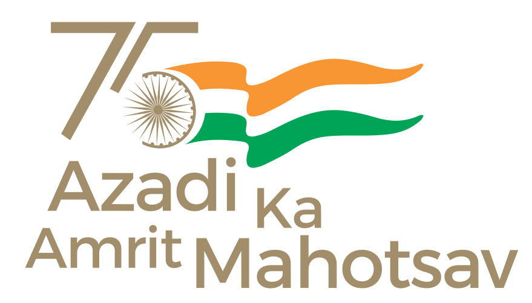

நாகப்பட்டினம்
|
 |
THANJAVUR DISTRICTA Coastal District of Tamil Nadu, on the eastern coast, Bay of Bengal, 326 K.M, south of the State Capital, Chennai, 145 K.M from Trichy, A middle Town. The District Capital Nagapattinam lies between Northern Latitude 10.7906 degrees and 79.8428 Degrees Eastern Longitude. A District known for its Rich Religious Heritage and Communal Harmony. Nagapattinam district was carved out by bifurcating the Erstwhile composite Thanjavur district on 18.10.1991. Nagapattinam is a unique District with all its historical and cultural significance. This Houses the places of Worship belongs to Major faiths. Nagapattinam is one of the constituents of chola mandalam, acclaimed as the Most prominent among the ancient Tamil Kingdoms. Its salient features more than anything else have contributed to the glory of the cholamandalam. |
 Thiru Johny Tom Varghese I.A.S |
District Admin Units
RevenueDivision : 2
Taluks : 4 
Development
Block : 06 
Local Bodies
Corporations : 0 
Constituencies
Assembly : 3 |
District At a GlanceGeneral:District: NagapattinamHeadQuarters: Nagapattinam State: TamilNadu Area:Total: 1940.00 Sq.KmsForest: 263.63 Sq.Ms Population:Total: 1616450Male: 798127 Female: 818323 |
DEPARTMENTS
District Differently Abled Welfare Office
DRDA
Education
Election
Revenue
Police
Fisheries
Transport
Commercial text-decoration
|
 |